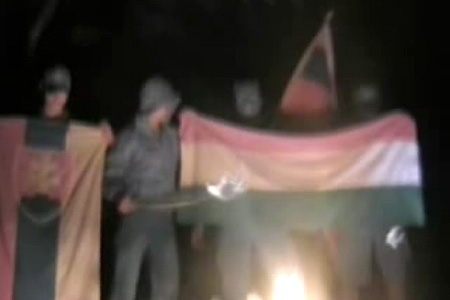

[A bejegyzést nem levettük, csupán az adatbázis hiba miatt tűnt el. A
kommentárok sajnos elvesztek.]

Kedves magyar testvéreim,
Azért
írok most, hogy újra megkapjam, a hőn áhított áruló jelzőt. Mert úgyis tudom, hogy ismét meg fogom
kapni, mint amikor szót emeltem azok ellen az albánok ellen, akik felgyújtottak egy szerb templomot, és
letépték csúcsáról a keresztet. Akkor megkaptam, hogy én idegenszívű vagyok, és áruló, és hogy
takarodjak Szerbiába. Most szlovák áruló leszek.
Áruló leszek, mert azt mondom, nem a
szlovákok bűne az ami történt. Mert nem a szlovák nép sújtott le magyar testvéreinkre. Nem! A
szlovák rendőrség volt az. Persze, tudom én, szlovák-szlovák. De ne mossuk össze! Mert októberben
pedig magyar rendőrök vertek, lőttek, tapostak magyar embereket. Sokkal többet, mint most a szlovák
rendőrök, és ugyanúgy, ok nélkül. Mégsem láttam lángoló magyar zászlókat. És nem is akarok. Pont,
ahogy lángoló szlovák zászlót sem akarok látni. És kérem, most ne jöjjön senki azzal, hogy azok nem
magyar rendőrök voltak. Szeretném én is elhinni, hogy magyar nem támad magyarra, de ez nem
igaz.
És mikor magyar rendőrök magyar földön tapostak magyar embereket, mit üvöltöttünk? Azt,
hogy „szar Magyarország”? Nem. Ugyanúgy nem
kellene most sem szar Szlovákiát énekelni, és szlovák
zászlót égetni. Ha egy nép rendőrsége hitvány, attól még nem lesz az egész nép bűnös! Ugyanígy, ha
egy nemzet vezetősége hitvány, attól még nem hitvány az a nemzet. Aki Slota miatt támadja a
szlovák népet, gondolkozzon el azon, mennyire lenne korrekt, ha Gyurcsány miatt támadnák a magyar
népet. Mondván, hogy a magyar nemzet miniszterelnöke egy idegenszívű zsidó, hát milyen nemzet
választ magának ilyen miniszterelnököt? Mert bizony, szavaztak Gyurcsány Ferencre, nem is kevesen.
Magyarok is. Mégsem bűnös ezért az egész magyar nemzet. Ugyanúgy, ahogy a szlovák nép sem bűnös.
Tudom-tudom, ez nem egyedi eset volt. És előfordult már olyan is, nem kevésszer, hogy
civil szlovákok támadtak magyarra. De ez nem a szlovák nép egységes akarataként történt. Ez nem a
szlovák szellemiség. Ez egyszerű sovinizmus, ami ellen küzdeni kell. Mindkét oldalon. Észre kell
vennünk, hogy a szlovákverő magyarok (mert ilyen is van bizony) ugyanúgy ártanak a két nép közötti
kapcsolatnak, mint a magyarverő szlovákok. Ezek NEM NACIONALISTÁK! Ezek nem hazafiak! Ezek
soviniszták! És ez ellen kell küzdenünk mindannyiunknak! A sovinizmus, és nem a szlovák nép ellen!
És meg kell értenünk azt is, hogy az ilyen támadások legtöbbje érzelmi indíttatású, és sokkal
inkább ostobaságból, hirtelen felindulásból, mint alapvető gonoszságból követik el.
Ne
higgye azonban senki sem, hogy én azt kérem, essünk térdre a szlovákok előtt. Álljunk előttük
büszke férfiként. Büszke férfiként, ha kell harcosként, de ne habzó szájú vadállatként, akinek
mindegy kit támad, csak szlovák legyen. Csak azt üssük, aki kezet emel a mi fajtánkra! Magyar
önvédelmet akarok, de nem céltalan magyar agressziót!
Nemrég történt, ha jól emlékszem
kapuváron, hogy egy magyar ns koncertsorozatra ellátogatott pár szlovák nemzetiszocialista is,
akiket egy kisebb, de bizonyára annál intelligensebb magyar társaság „szar Szlovákia”
énekléssel fogadott. A Vérszerződés énekese még le is szólt nekik, hogy ezt kurva gyorsan fejezzék
be, mert Ő így nem koncertezik. De biztos Ő is áruló, ahogy én. Mert az a szlovák, aki ellátogat
egy magyar ns koncertre, bizonyára azért teszi, mert gyűlöli a magyarokat. Logikus
nem?
Fontos továbbá azt is megértenünk, hogy a szlovákellenes uszítással, csak tovább
rontunk felvidéki magyar testvéreink helyzetén. Könnyű itt Budapesten Szlovák zászlót égetni, úgy,
hogy a felvidéki magyarokon állnak majd érte bosszút. Könnyű itt szítani a gyűlöletet, ahol minket
nem érhet el. Könnyű ez. Könnyű, és haszontalan. Mert a magyar-szlovák kérdést nem verekedéssel és
zászlóégetéssel kell megoldani. Rendet kell tenni a fejekben, mindkét oldalon. És ez jelenleg
elsősorban a mi érdekünk, hiszen ők vannak abban a helyzetben, hogy árthatnak nekünk. Ezért
utasítom vissza a leghatározottabban azt, ha engem valaki árulónak nevez, hiszen sokkal inkább
szívemen viselem felvidéki magyar testvéreink sorsát annál, mint aki Budapest közepén éget szlovák
zászlót. Rendet kell tenni a fejekben, és meg kell állítani az alaptalan
gyűlölködést.
Alaptalan, és ezt nagyon fontos kiemelnünk, hiszen itt mesterségesen
gerjesztett gyűlöletről van szó. Mert a felvidéki magyarok nem terrorizálják a szlovák népet. Mert
a felvidéki magyarok nem lopnak. Mert a felvidéki magyarok dolgoznak. Nem úgy, mint egy másik nép,
akik ellen mi magyarok, állítólag alaptalanul szítunk gyűlöletet.
Gátat kell tehát szabnunk
az alaptalan, de leginkább céltalan gyűlöletkeltésnek, hiszen az nem válik se a magyar nép, se a
szlovák nép hasznára. A szlovák nép nem az ellenségünk. A mi ellenségünk az ostobaság, a
gonoszság, és a sovinizmus. És ezek egyike sem általános jellemzője a szlovák népnek.
És még
egy utolsó gondolat. Csak az nevezze a szlovák népet bűnösnek, vagy „szarnak”, aki biztos benne, hogy több az olyan szlovák, aki köp a magyar
zászlóra, mint az olyan magyar, aki köp az Árpád-sávosra.
Ez lemaradt (BiG):
Egyébként boldog születésnapot Tomcat!
Erőt, egészséget! Meg sok marcipánt a gyárlakóktól ;)
(Vigyetek neki tényleg.)